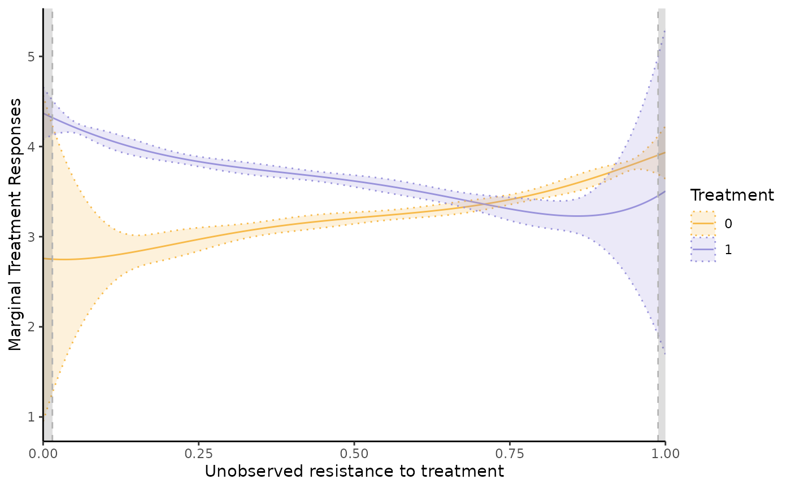
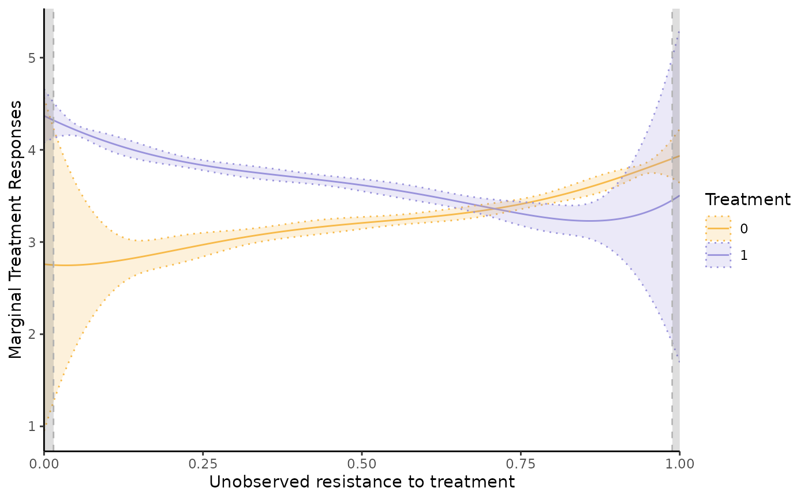

Semi-IV Regression Function
semiivreg.RdSemi-IV regression function from Bruneel-Zupanc (2024).
Syntax inspired from ivreg. Returns MTE and MTR curves with confidence intervals.
Also returns coefficient of estimated ATE in case the treatment effect is homogenous.
The estimation is almost instantaneous (a few seconds at most).
By default, return analytic standard errors not accounting for the fact that the propensity score is estimated in semiivreg.
Use semiivreg_boot to obtain 'correct' bootstrapped confidence intervals (takes a bit longer).
Usage
semiivreg(formula, data, propensity_formula=NULL, ref_indiv =NULL,
firststage_model="probit",
pol_degree_transform = 5, conf_level = 0.05, common_supp_trim=c(0,1),
trimming_value=NULL, automatic_trim=FALSE, plotting=TRUE)
semiivreg_boot(formula, Nboot=500, data, propensity_formula=NULL, ref_indiv =NULL,
firststage_model="probit",
pol_degree_transform = 5, common_supp_trim=c(0,1), trimming_value = NULL,
automatic_trim = FALSE, plotting=TRUE, conf_level = 0.05, CI_method = "delta")Arguments
- formula
Formula of the regression, of the form outcome ~ treatment | semi-iv0 | semi-iv1 | commoncovariates.
The treatment variable should be binary (0, 1).
covariates with an effect that differs on D=1 and D=0 should be included in each semi-iv0 and semi-iv1.- data
Dataframe containing the data.
- propensity_formula
Formula for the 1st stage. If nothing specified, just runs a probit of d ~ semi-iv0 + semi-iv1 + covariates (removing the redundant variables).
- ref_indiv
Specify the reference individual (in terms of covariates) at which we will evaluate the function.
by default takes the average value for the numerical covariates, and the reference level for factors.- firststage_model
By default, the first stage is a probit model. Can specify another model (e.g., "logit").
- pol_degree_transform
Degree of the polynomial transformation for the control function.
- conf_level
Confidence level for the confidence intervals.
- common_supp_trim
Vector of two values indicating the set of propensity scores at which we will evaluate the function.
Default is the full support[0,1]. But can be trimmed manually.- trimming_value
Can either be a vector c(0.05, 0.95) indicating the quantile of the propensity score above which and below which we keep the observations for both D=0 and D=1.
Can also be a single value, in which case symmetric trimming up and down.
Inserting a trimming_value generates automatic_trim = TRUE automatically.- automatic_trim
If TRUE, the estimation of the second stage is done on the common_support only.
- plotting
TRUE if wants to plot at the end of the function, FALSE otherwise.
- Nboot
Number of bootstrap samples.
- CI_method
"delta" for delta method, "curve" for bootstrap the MTE curves directly.
Value
A list with the following elements:
$dataReturns data of output estimation used to plot the MTE and MTR. In details:
$RESDataframe with the estimated MTE and MTR values and their confidence intervals.
$RES_homogenousDataframe with the estimated MTE and MTR values and their confidence intervals for homogenous treatment effects.
$orig_dataOriginal data used for the estimation where we added the propensity score estimated, named
Phat.$ref_indivReference individual(s) at which we evaluate the MTE and MTR.
$XdatOriginal covariates, just used for bootstrap function.
$estimateReturns the estimation of:
$estSecond stage estimate of \(E[Y_d | D, W_d, X, \widehat{P}]\) where \(\widehat{P}\) is controlled for with a flexible control function (polynomial) \(\kappa_d(P)\).
$propensityFirst stage estimate of the propensity score.
$est_homogenousHomogenous TE Second stage estimate of \(E[Y_d | D, W_d, X, \widehat{P}]\)
Homogenous TE implies restriction that \(\kappa_0(P) = -\kappa_1(P) \frac{P}{1-P}\) because \(E(U)=0\).
which ensures \(k_0(u) = k_1(u)\), cf Bruneel-Zupanc (2024).$homogenous_TEExtract only the ATE estimation in case of homogenous treatment effects (can be observed in
est_homogenousas well).
$plotReturns separately the following plot objects:
supp,mtr,mte,mtr_homogenous,mte_homogenous.$suppReturns the common support of the propensity score
Phatbetween the two treatment group.$callReturns the call of the function.
The estimated model
semiivreg estimates the marginal treatment effect (MTE) and marginal treatment response (MTR) of the following model.
The potential outcomes are given by $$ Y_0 = \delta_{0} + W_0 \beta_0 + X \beta^X_{0} + U_0, \quad \quad \quad (1) $$ $$ Y_1 = \delta_{1} + W_1 \beta_1 + X \beta^X_{1} + U_1, \quad \quad \quad (2) $$ with selection rule $$ \begin{aligned} D^* &= g(W_0, W_1, X) - V \\ &= - ( \alpha + \alpha_0 W_0 + \alpha_1 W_1 + \alpha_{X} X ) - V, \quad \quad \quad (3) \\ \text{ with } \quad D &= \mathbb{I}(D^* > 0), \end{aligned} $$ where
semi-IVs. \(W_0\) (respectively \(W_1\)) are the semi-IVs excluded from \(Y_1\) (resp. \(Y_0\)). Each \(W_0\) and \(W_1\) may contain several variables. Nonparametric identification requires that each \(W_d\) contains at least one excluded variable (see Bruneel-Zupanc, 2024).
Covariates. \(X\) are the covariates that affect both potential outcomes. One can restrict the effect of \(X\) to be the same across both potential outcomes (i.e., \(\beta^X_{0} = \beta^X_{1}\)). To do so, specify:
semiivreg(y~d|w0|w1|x, data). In general, different effect of the covariates across alternatives (i.e., \(\beta^X_{0} \neq \beta^X_{1}\)). To be specified by including the covariates in the semi-IVs:semiivreg(y~d|w0+x|w1+x, data).Unobservables. \(U_0\) and \(U_1\) are general unobservables (may include several shocks, some may be the same across alternatives) affecting the outcomes. \(V\) is a scalar unobservable that affects the selection. The lower \(V\), the more likely one is to select into treatment. Nonparametric identification requires independence, i.e., \((U_0, U_1, V) \perp (W_0, W_1) | X\). For estimation here, we additionally assume additive separability of the covariates \(X\), i.e., that \(E(U_d | V, X) = E(U_d | V)\) for both \(d=0,1\). This assumption is not necessary for the identification, nor for the estimation. But it is a standard simplification that helps the estimation. See Carneiro, Heckman and Vytlacil (2011), Brinch, Mogstad and Wiswall (2017) or Andresen (2018) for comparable examples of the estimation of MTE with IVs.
Estimation Procedure
The estimation procedure follow closely the counterpart estimation of MTE with standard IVs, see for e.g., Andresen (2018).
The command estimates marginal treatment responses and marginal treatment effects, i.e.,
$$
\begin{aligned}
MTR_d(u, w_d, x) &= E(Y_d | X=x, W_d=w_d, U_D=u), \\
MTE(u, x, w_0, w_1) &= E(Y_1 - Y_0 | X = x, W_0=w_0, W_1=w_1, U_D=u) \\
&= MTR_1(u, w_1, x) - MTR_0(u, w_0, x),
\end{aligned}
$$
where \(U_D = F_V(V) \sim \mathcal{U}(0, 1)\) is the normalized unobserved resistance to treatment.
The estimation proceeds in two stage.
First stage. Estimate the propensity score \(\widehat{P}\) of treatment selection of equation (3).
By default, the estimation assumes a probit model for the first stage (i.e., assumes \(V\) is normally distributed). But can specify otherwise (e.g., logit) with
By default, the function \(g(\cdot)\) is given by the simple linear specification above, but the code allows to specify any other first stage. For example:firststage_modelcommand. In theory, could add any specification for the first stage, could even allow to estimate the propensity score outside of the semiivreg command (not implemented yet).Second stage. Estimate the control function \(\kappa_d(P)\) of the potential outcomes \(Y_d\) given the propensity score \(P\) and the covariates \(X\). The control function is estimated with a flexible polynomial transformation of the propensity score. The estimation is done with a stacked regression of the potential outcomes specification (1)-(2): $$ \begin{aligned} E[Y|W_0, W_1, X, \widehat{P}] = &D \times ( \delta_{1} + W_1 \beta_1 + X \beta^X_{1} + \kappa_1(\widehat{P}) ) + \\ &(1-D) \times ( \delta_{0} + W_0 \beta_0 + X \beta^X_{0} + \kappa_0(\widehat{P})). \end{aligned} $$ where the control functions are sample estimate (using estimate \(\widehat{P}\)) of their theoretical counterpart: $$\begin{aligned} \kappa_1(P) &= E[ U_1 | D=1, W_1, W_0, X,P] = E[U_1|D=1, P] = E[U_1 | U_D \leq P] \\ \kappa_0(P) &= E[ U_0 | D=0, W_1, W_0, X,P] = E[U_0|D=0, P] = E[U_0 | U_D > P] \end{aligned}$$ By default, we estimate flexible polynomials of degree
pol_degree_transformfor \(\kappa_0(P)\) and \(\kappa_1(P)\) .
About the semi-IVs and covariates, note that \(W_0\) and \(W_1\) can be flexible transformations (polynomial, splines) of specific variables, so the outcome equation are quite flexible (could also specify interactions between \(W_d\) and \(X\)).
Once equation the second stage is estimated, we don't need to estimate any other parameters, just to take the proper derivatives of the estimated functional form. We have: $$\begin{aligned} \widehat{k}_1(u) &= E[ U_1 | U_D=u] = \widehat{\kappa}_1(u) + u \widehat{\kappa}_1'(u) \\ \widehat{k}_0(u) &= E[ U_0 | U_D=u] = \widehat{\kappa}_0(u) - (1-u) \widehat{\kappa}_0'(u), \end{aligned}$$ where the derivatives are easy to compute if \(\kappa\) is a polynomial function.
Then, the Marginal Treatment Responses are given by: $$ \begin{aligned} \widehat{MTR}_d(u, w_d, x) &= E(Y_d | X=x, W_d=w_d, U_D=u) = \widehat{\delta}_{d} + w_d \widehat{\beta}_d + x \widehat{\beta}^X_{d} + \widehat{k}_d(u), \end{aligned} $$and the Marginal Treatment Effects are $$ \begin{aligned} \widehat{MTE}(u, x, w_0, w_1) = \widehat{MTR}_1(u, w_1, x) - \widehat{MTR}_0(u, w_0, x). \end{aligned} $$
Special case with Homogenous Treatment Effects
The homogenous treatment effects estimates correspond to the same potential outcome model (1)-(2), with \(U_0 = U_1 = U\).
This leads to known restrictions on the control functions \(\kappa_0(P)\) and \(\kappa_1(P)\) that we impose in the stacked second stage regression. Indeed,
$$
E(U) = 0 = E(U | U_D \leq P) P + E(U | U_D > P) (1-P)
$$
So, \(\kappa_0(P) = -\kappa_1(P) \frac{P}{1-P}\), and one can check that it yields \(k_0(u) = k_1(u) = k(u)\).
Thus, the MTE is constant (\(k_1(u) - k_0(u) = 0\), it cancels out), and equal to:
$$
\widehat{MTE}(x, w_0, w_1) = \widehat{\delta}_{1} - \widehat{\delta}_{0} + w_1 \widehat{\beta}_1 - w_0 \widehat{\beta}_0 + x (\widehat{\beta}^X_{1} - \widehat{\beta}^X_{0}).
$$
The MTR still varies with \(u\) because \(k(u)\) is not constant, and we also estimate it.
Caution about the Estimated Standard errors
By default, return analytic standard errors not accounting for the fact that the propensity score is estimated in semiivreg.
Use semiivreg_boot to obtain 'correct' bootstrapped confidence intervals.
References
Bruneel-Zupanc, C. (2024). Don't (fully) exclude me, it's not necessary! Identification with semi-IVs. arXiv preprint arXiv:2303.12667.
For empirical applications of the estimation of Marginal Treatment Effects with standard IVs, see for example:
Carneiro, P., Heckman, J. J., & Vytlacil, E. J. (2011). Estimating marginal returns to education. American Economic Review, 101(6), 2754-2781.
Brinch, C. N., Mogstad, M., & Wiswall, M. (2017). Beyond LATE with a discrete instrument. Journal of Political Economy, 125(4), 985-1039.
In particular, see Andresen, M. E. (2018). Exploring marginal treatment effects: Flexible estimation using Stata. The Stata Journal, 18(1), 118-158.
Author
Christophe Bruneel-Zupanc, cbruneel.com
Examples
# Load data:
data(roydata)
# Run the semi-IV regression
semiiv = semiivreg(y~d|w0|w1, data=roydata)
 semiiv = semiivreg(y~d|w0|w1|Xbinary + Xcontinuous, data=roydata) # with covariates
semiiv = semiivreg(y~d|w0+Xbinary|w1+Xbinary|Xcontinuous, data=roydata)
semiiv = semiivreg(y~d|w0|w1|Xbinary + Xcontinuous, data=roydata) # with covariates
semiiv = semiivreg(y~d|w0+Xbinary|w1+Xbinary|Xcontinuous, data=roydata)
 # Xbinary has different effect on Y0 and Y1, Xcontinuous has the same.
semiiv = semiivreg(y~d|w0|w1, data=roydata, propensity_formula = d~w0+w1+w0:w1)
# if want to specify another first stage
semiiv$plot$mtr # if want to plot mtr_plot

# Xbinary has different effect on Y0 and Y1, Xcontinuous has the same.
semiiv = semiivreg(y~d|w0|w1, data=roydata, propensity_formula = d~w0+w1+w0:w1)
# if want to specify another first stage
semiiv$plot$mtr # if want to plot mtr_plot
